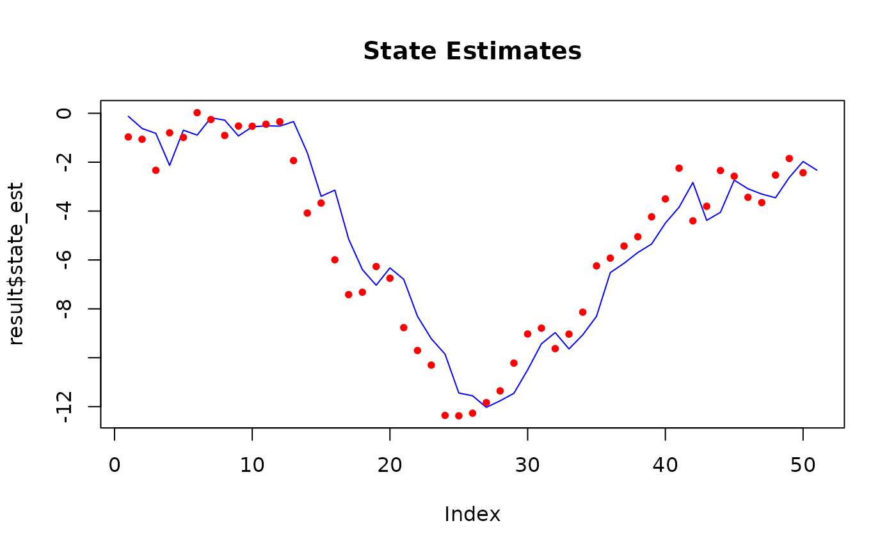
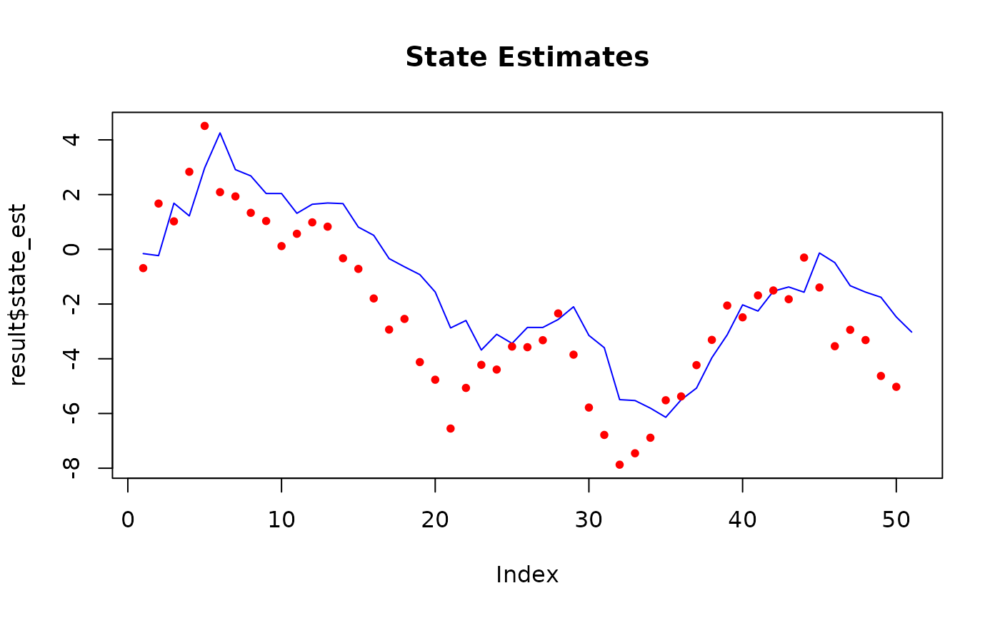
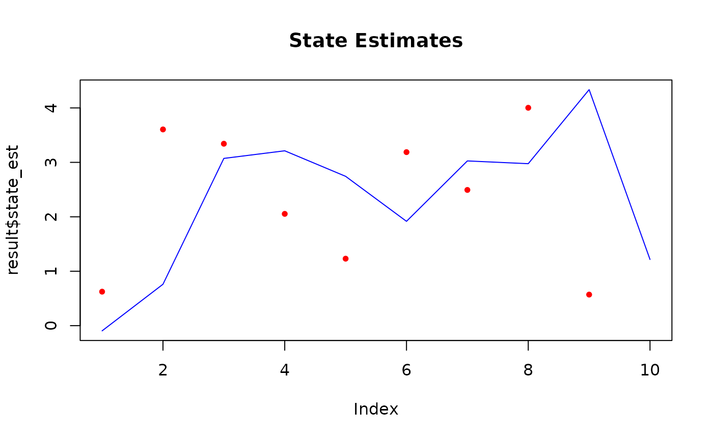

This function implements a bootstrap particle filter for estimating the hidden states in a state space model using sequential Monte Carlo methods. Three filtering variants are supported:
SIS: Sequential Importance Sampling (without resampling).
SISR: Sequential Importance Sampling with resampling at every time step.
SISAR: SIS with adaptive resampling based on the Effective Sample Size (ESS). Resampling is triggered when the ESS falls below a given threshold (default
particles / 2).
It is recommended to use either SISR or SISAR to avoid weight degeneracy.
Arguments
- y
A numeric vector or matrix of observations. Each row represents an observation at a time step.
- num_particles
A positive integer specifying the number of particles.
- init_fn
A function that initializes the particle states. It should take the current particles as its first argument and return a vector or matrix of initial particle states.
- transition_fn
A function describing the state transition model. It should take the current particles and the current time step as arguments and return the propagated particles.
- log_likelihood_fn
A function that computes the log likelihoods for the particles. It should accept an observation, the current particles, and the current time step as arguments and return a numeric vector of log likelihood values.
- obs_times
A numeric vector indicating the time points at which observations in
yare available. Must be of the same length as the number of rows iny. If not specified, it is assumed that observations are available at consecutive time steps, i.e.,obs_times = 1:nrow(y).- algorithm
A character string specifying the particle filtering algorithm to use. Must be one of
"SISAR","SISR", or"SIS". Defaults to"SISAR".- resample_fn
A character string specifying the resampling method. Must be one of
"stratified","systematic", or"multinomial". Defaults to"stratified".- threshold
A numeric value specifying the ESS threshold for triggering resampling in the
"SISAR"algorithm. If not provided, it defaults toparticles / 2.- return_particles
A logical value indicating whether to return the full particle history. Defaults to
TRUE.- ...
Additional arguments passed to
init_fn,transition_fn, andlog_likelihood_fn.
Value
A list containing:
- state_est
A numeric vector of estimated states over time, computed as the weighted average of particles.
- ess
A numeric vector of the Effective Sample Size (ESS) at each time step.
- loglike
The accumulated log-likelihood of the observations given the model.
- loglike_history
A numeric vector of the log-likelihood at each time step.
- algorithm
A character string indicating the filtering algorithm used.
- particles_history
(Optional) A list of particle state matrices over time (one per time step), returned if
return_particlesisTRUE.- weights_history
(Optional) A list of particle weight vectors over time (one per time step), returned if
return_particlesisTRUE.
Details
The particle filter is a sequential Monte Carlo method that approximates the posterior distribution of the state in a state space model. The three supported algorithms differ in their approach to resampling:
SIS: Particles are propagated and weighted without any resampling, which may lead to weight degeneracy over time.
SISR: Resampling is performed at every time step to combat weight degeneracy.
SISAR: Resampling is performed adaptively; particles are resampled only when the Effective Sample Size (ESS) falls below a specified threshold (defaulting to
particles / 2).
The Effective Sample Size (ESS) in context of particle filters is defined as $$ESS = \left(\sum_{i=1}^{\text{n}} w_i^2\right)^{-1},$$ where \(n\) is the number of particles and \(w_i\) are the normalized weights of the particles.
The default resampling method is stratified resampling, as Douc et al., 2005 showed that it always gives a lower variance compared to multinomial resampling.
References
Douc, R., Cappé, O., & Moulines, E. (2005). Comparison of Resampling Schemes for Particle Filtering. Accessible at: https://arxiv.org/abs/cs/0507025
Examples
init_fn <- function(particles) rnorm(particles, 0, 1)
transition_fn <- function(particles) particles + rnorm(length(particles))
log_likelihood_fn <- function(y, particles) {
dnorm(y, mean = particles, sd = 1, log = TRUE)
}
# Generate data
y <- cumsum(rnorm(50))
num_particles <- 100
# Run the particle filter using default settings.
result <- particle_filter(
y = y,
num_particles = num_particles,
init_fn = init_fn,
transition_fn = transition_fn,
log_likelihood_fn = log_likelihood_fn
)
plot(result$state_est, type = "l", col = "blue", main = "State Estimates")

# With parameters
init_fn <- function(particles) rnorm(particles, 0, 1)
transition_fn <- function(particles, mu) {
particles + rnorm(length(particles), mean = mu)
}
log_likelihood_fn <- function(y, particles, sigma) {
dnorm(y, mean = particles, sd = sigma, log = TRUE)
}
# Generate data
y <- cumsum(rnorm(50))
num_particles <- 100
# Run the particle filter using default settings.
result <- particle_filter(
y = y,
num_particles = num_particles,
init_fn = init_fn,
transition_fn = transition_fn,
log_likelihood_fn = log_likelihood_fn,
mu = 1,
sigma = 1
)
plot(result$state_est, type = "l", col = "blue", main = "State Estimates")

# With observations gaps
init_fn <- function(particles) rnorm(particles, 0, 1)
transition_fn <- function(particles, mu) {
particles + rnorm(length(particles), mean = mu)
}
log_likelihood_fn <- function(y, particles, sigma) {
dnorm(y, mean = particles, sd = sigma, log = TRUE)
}
# Generate data using DGP
simulate_ssm <- function(num_steps, mu, sigma) {
x <- numeric(num_steps)
y <- numeric(num_steps)
x[1] <- rnorm(1, mean = 0, sd = sigma)
y[1] <- rnorm(1, mean = x[1], sd = sigma)
for (t in 2:num_steps) {
x[t] <- mu * x[t - 1] + sin(x[t - 1]) + rnorm(1, mean = 0, sd = sigma)
y[t] <- x[t] + rnorm(1, mean = 0, sd = sigma)
}
y
}
data <- simulate_ssm(10, mu = 1, sigma = 1)
# Suppose we have data for t=1,2,3,5,6,7,8,9,10 (i.e., missing at t=4)
obs_times <- c(1, 2, 3, 5, 6, 7, 8, 9, 10)
data <- data[obs_times]
num_particles <- 100
# Run the particle filter
# Specify observation times in the particle filter using obs_times
result <- particle_filter(
y = data,
num_particles = num_particles,
init_fn = init_fn,
transition_fn = transition_fn,
log_likelihood_fn = log_likelihood_fn,
obs_times = obs_times,
mu = 1,
sigma = 1,
)
plot(result$state_est, type = "l", col = "blue", main = "State Estimates")
